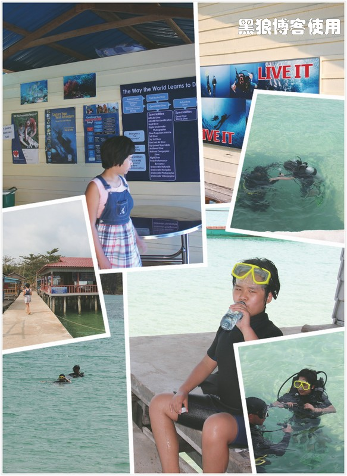
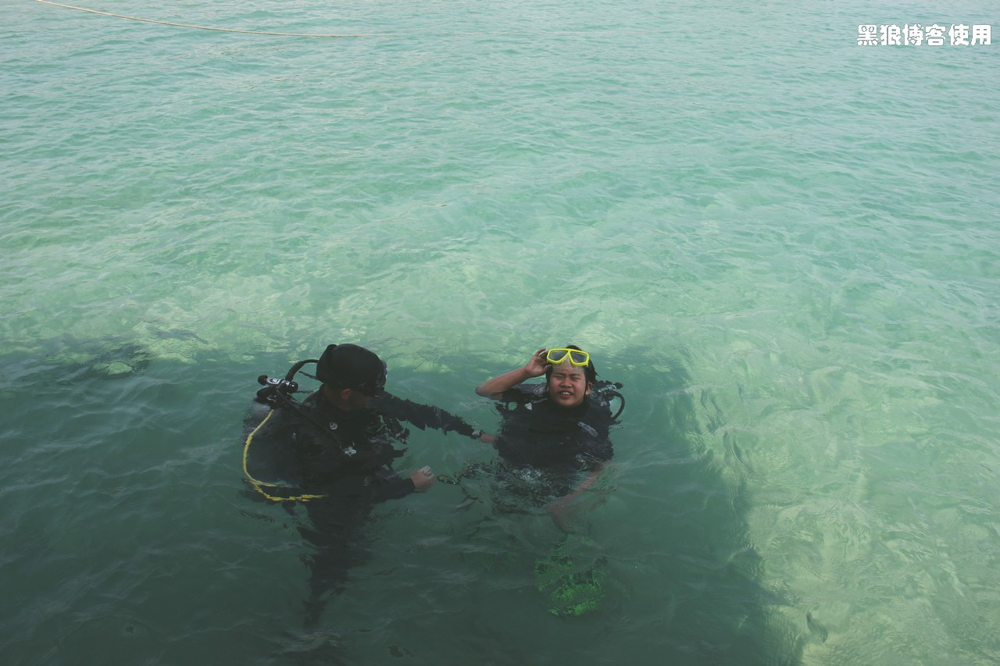
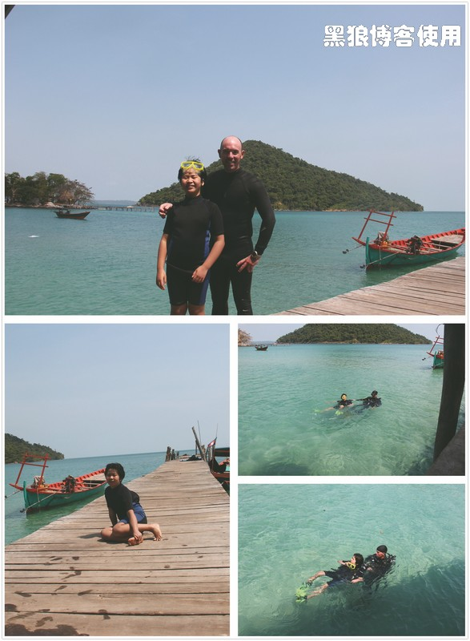
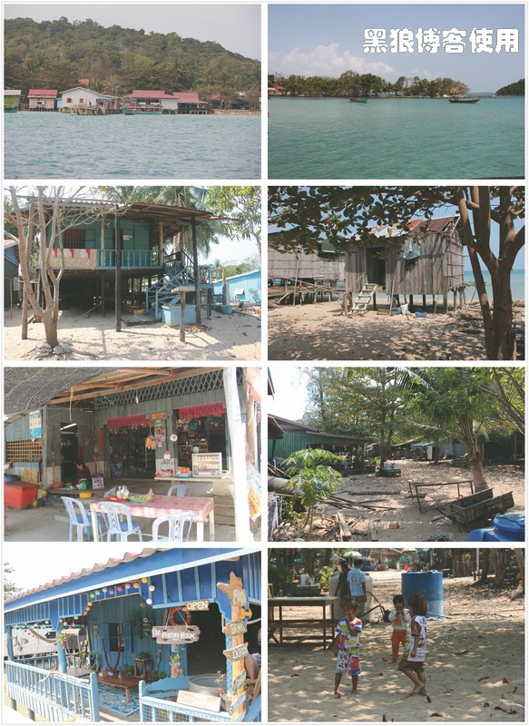
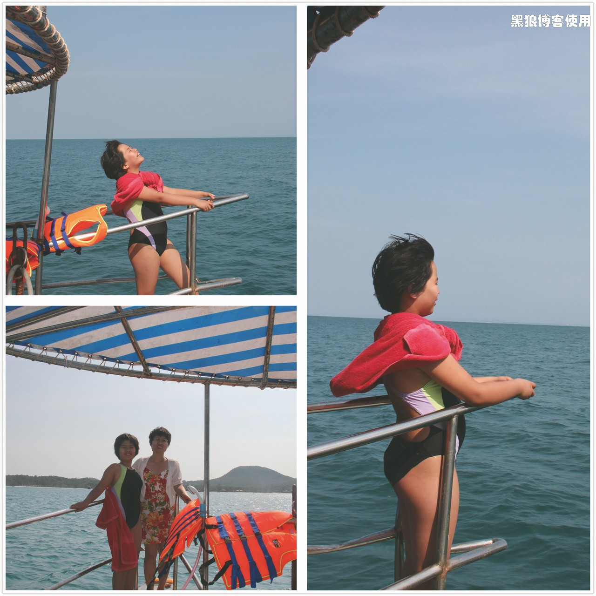
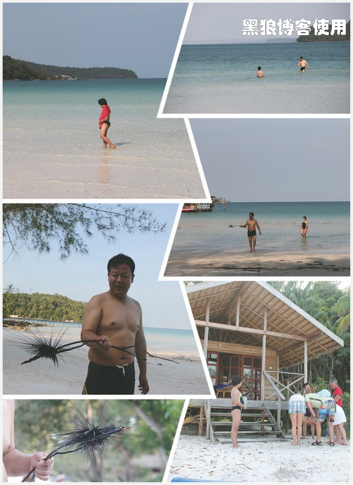
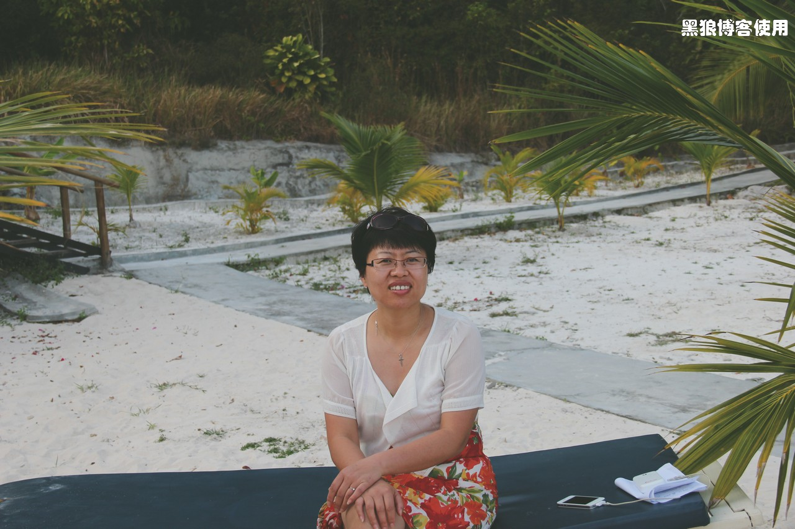
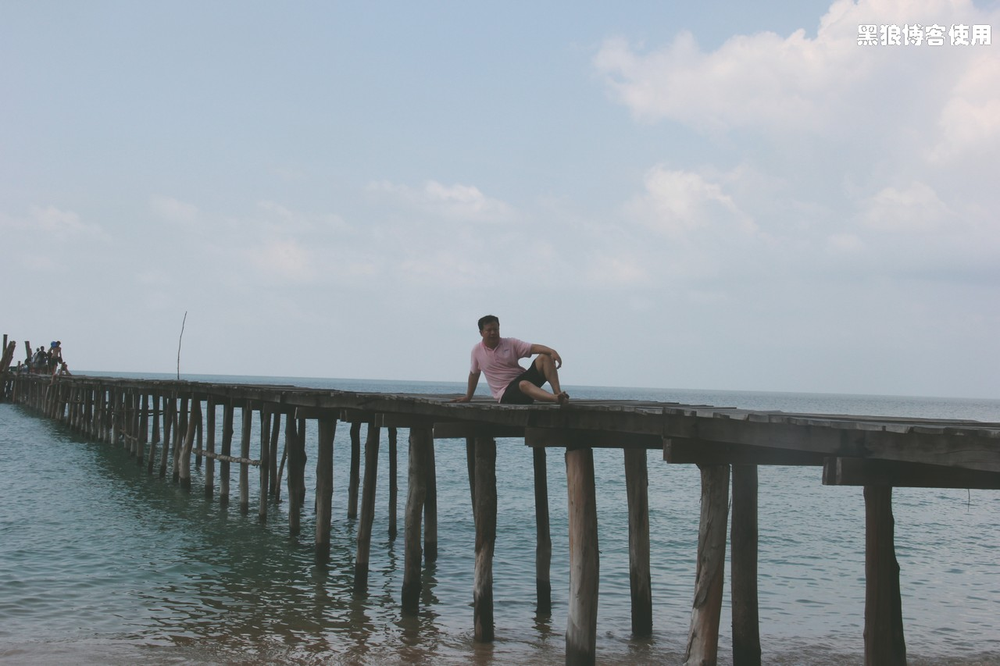
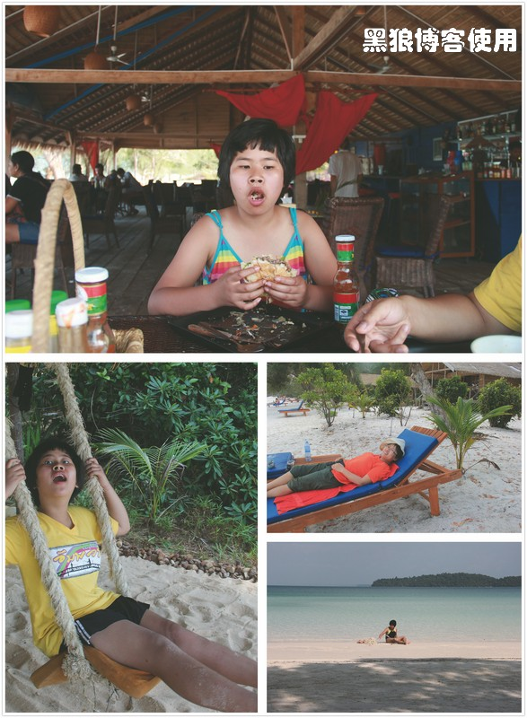
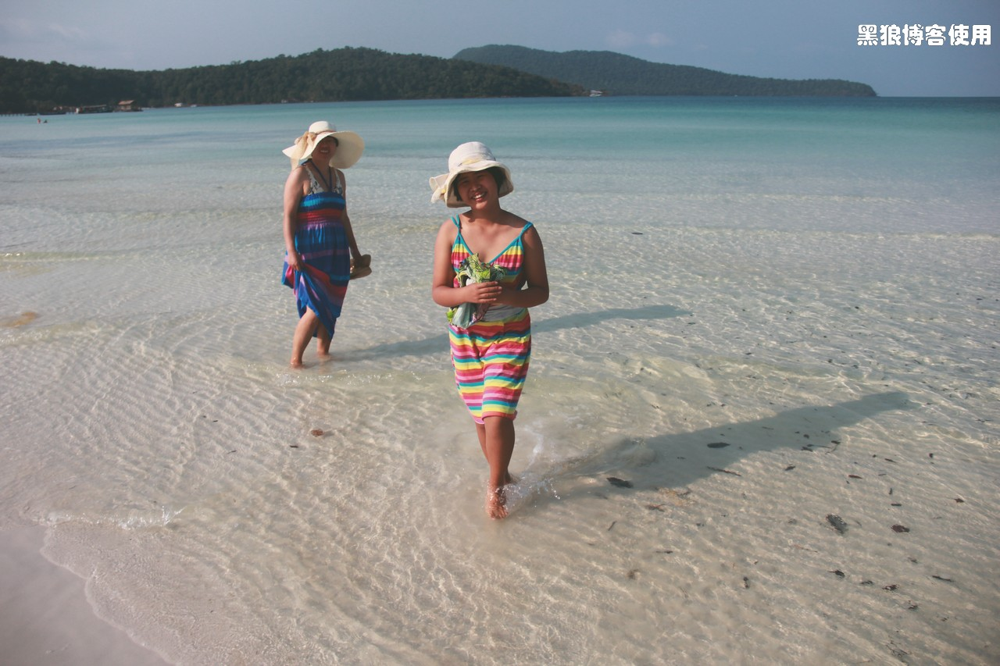

柬埔寨自助游（6）
题外话：
—— 有些事情越想越后怕，幸亏它只是虚惊一场。
1 月 31 日吃过早饭， 带着大包子去深潜（Diving）。 昨晚听说可以 diving，她很兴奋，毫不犹豫地就报名了，终于可以近距离地看看热带海水中的生物。
今早她却心事重重，仿佛将要经历一次重大的人生挑战。大包子一直鼓动我跟她一起深潜，我最近身体不适，一直吃药，就大费口舌地拒绝了她。
我们坐船约 30 多分钟，到了小岛北侧的渔民生活区，在这里大包子要学习一下潜水动作。
第一次深潜，需要学习 4 个动作，并试着深潜 2 次，如果合格，再看 3 天共 5 个小时的教学录像，就可以拿到深潜证了。
教练是个美国人，很有耐心。
四个动作都要在潜水状态完成，前三个动作是把呼吸管从口中拿掉，然后排水，再放到嘴上正常呼吸，第四个动作是让海水进入到眼镜内，然后鼻子出气，排掉眼镜内的水。
前三个动作完成得还算顺利，第四个动作大包子试了几次都不行，嚷着鼻子总是进海水，嚷着海水实在是不舒服，到后来大包子拍着胸口说呼吸费力、憋气。教练询问小孩的心脏和呼吸是否有问题，我和老胡都说没有问题。
我和老胡一直试图把大包子的这个状态翻译给教练，口说手划，教练一直也没弄明白，到最后只能对教练说：“continue（go on）继续”。
一次，大包子浮出水面，大喊“妈妈，我不行了，我要上去”，我和老胡说“继续”。又尝试了几次，大包子又喊了几次“妈妈，我 ”，教练实在是看不下去了，哈哈，也许是想让大包子调整一下状态，上岸休息 30 分钟。
休息过后，重新穿戴，教练带着他到远处去体验 5 米深的潜水，因为规定动作没有完成，不能去深潜了，只能象征性的体验一下。
大包子潜水的时候，我在小渔村里面闲逛，这里的东西比宾馆那边便宜很多，大瓶矿泉水才 2000 瑞尔（便宜一半），虽然在一个岛上，可惜没船是过不来的。
潜水结束，大包子对我说：“你知道我在水里为何喊妈妈而没有喊爸爸吗？”，我这才发觉，她好像一直在向她妈妈求助，便问为何，原来大包子太了解我了，哈哈，知道我小气，花了钱，就不会让她半途而废的。
回到银色沙滩的时候，已经是下午 3 点钟了。
换上泳衣，继续爬泳、捡贝壳。
我和大包子沿着海边慢慢地捡着贝壳，海水清澈见底，偶尔看见黑色的东西，我都会用脚去踢或踩一下，看看是否是贝壳，不过大部分都是树叶、水草等。
又隐隐约约看见一个黑乎乎的东西，我说：“大包子，快去踩踩，看看是不是贝壳！”，大包子天生胆小谨慎，看了一会儿没有去踩，我又催促，她说： “不对，好像是海胆！”，我吓了一跳，忙仔细观察，果然隐隐约约的有好多长刺，幸亏大包子胆小没踩，后怕，我让大包子去找家伙，把它弄到岸上去。
大包子跑到岸上去找东西了，等了半天不见回来，估计岸边没啥“工具”吧。我又发现前方有一个黑乎乎的东西，正在游动，用脚踩了一下，“啊”的一声大叫，感觉脚上扎了刺，用手在水下摸索着拔下来，居然是两根细长刺，再看那个黑东西，居然是一条鱼，而且还在原地游来游去，一点儿逃跑的意思也没有，你不跑，我躲！
大包子找了一根木棍，我和大包子把海胆弄到了岸上，还没玩几分钟，大包子又开始担心海胆有毒，躲得很远，最后还逼着我把海胆送给了别人。
海边的生活，简单而又轻松。老外们都在阳光下暴晒着后背，我和老胡则在树荫下乘凉。
小岛上有 3、4 家西式小餐馆，每天的大事就是盘算着去岛上的哪家餐馆吃饭，除此之外无大事。
 